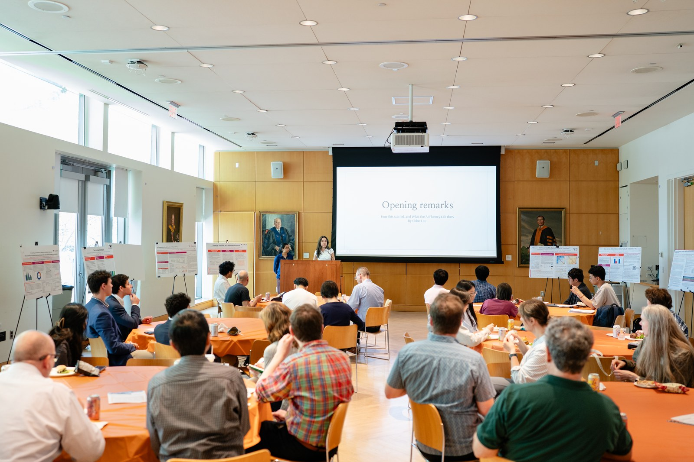
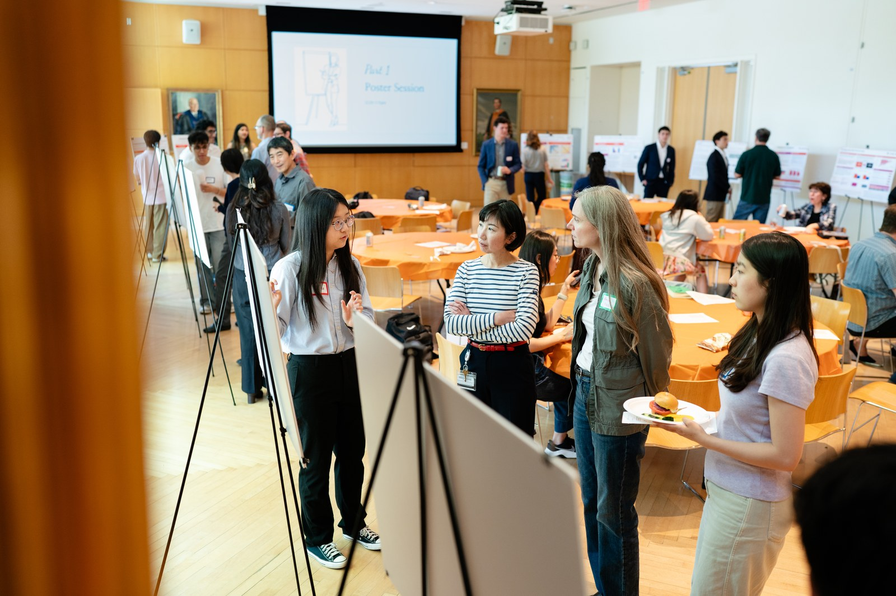

Teaching AI to students outside computer science.
My roleFounded the program and pitched it to the Princeton AI Lab. Co-lead curriculum design and student mentorship, and ran the spring 2026 pilot through to its closing symposium.
Where it started
In a Peer Career Advising session, where students take drop-in career appointments from other students, one asked me: "Why should I even try applying to jobs when I know AI will read my application, and everyone will use AI to write their stuff?" I did not have an answer for him.
Around the same time, Anthropic flew me to San Francisco for a panel on AI in higher education. While preparing for it I realized I wanted to teach students to think critically about AI. Speaking for one company or tool interested me less. Nobody on campus was teaching this student to student, so I pitched it to the Princeton AI Lab, the university group that funds student AI programming, in November 2025. We launched the pilot that spring.

The problem worth solving
Most AI education at Princeton goes through CS departments, which means it naturally reaches students who already see themselves as builders. The students most anxious about it were the ones in my advising appointments: humanities majors, social scientists, people with no coding background. They felt the conversation was happening without them, which is the gap the program was built to close.
What I built
The AI Exploration Lab teaches 25+ undergraduates from psychology, classics, sociology, and non-CS STEM to use AI critically in their own research. They move through it together as one cohort, which means the same group attends every workshop. Students come to those workshops, run a project that studies AI itself, and get paired with a postdoc or grad-student mentor.
Using AI well means something different for a classics major than for someone studying politics, so instead of one universal workshop I built each session around the research students were already doing. Siya, who had never written code, learned the API and Google Colab well enough to run 40 prompts through three models and measure how they handled political framing. Sebastian ran 450 standardized passes over 50 firms' earnings calls. Khang used graph neural networks to model potential energy surfaces. None of that is really about the tooling. Every one of them was studying the model itself.
The moments that showed it was working
At our second workshop, a classics major named Eric presented a project where he tested four different AI models on ancient Greek morphological parsing. He caught one hallucinating its own version number, and when he described tricking the AI into producing a CSV output, the room laughed. Students who had walked in intimidated were suddenly debugging AI behavior and finding it funny.
After that same session, a student named Jerome stayed behind. He had found a lot of material for his project but felt overwhelmed and unsure what it added up to. I showed him my own messy drafts from earlier in the semester and walked him through the scoping framework I use at Hoagie: cut it into pieces, ship one. Eric is the lab working at its best. Jerome is the reason I built it.
What's different about this
The cohort studies AI itself rather than tools for using it. Students pick a research question about how a model behaves, run it themselves, and present what they found at a symposium open to the rest of campus. Nine of them finished a project and presented it.

What I took away
Jerome is the one I check on. He is the student who stayed behind after the second workshop, unsure what his material added up to. He finished the semester having run language models through scenarios where someone leans on a chatbot for advice while showing signs of emotional dependency. That was his own question. I only helped him cut it into pieces.
The honest part is that the culture did not hold on its own. One student wrote in the exit form that the room was vibrant at the first meeting and thinner after it. He was right, so cohort two gets an attendance expectation instead of an assumption. The thing every single student asked us to keep was the postdoc pairing, which was the piece I was least sure about when I designed it.
Most of the first cohort signed up to come back. Some as peer mentors, some as workshop guests walking the next group through how they built their experiment, some recruiting in their own departments. Siya and Sebastian are co-leading the next one with me. The program runs again in the fall whether or not I am the one running it, which is the part I wanted.